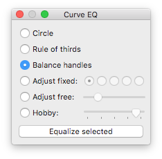

Curve Equalizer helps you quickly balance the Bézier handles of a curve, or adjust the curvature to a fixed amount.

Select the curve adjustment method.
| Method | Description |
|---|---|
| Circle | The result is similar to what FontLab Studio 5 does when you alt-shift-click a curve segment. If the triangle between the first and last point of the segment is rectangular with two 45° angles, the result will approximate a quarter circle. |
| Rule of thirds | The resulting handles and the line between the two handles will each be nearly equal in length. |
| Balance handles | The curvature is not changed, only the length of the handles is distributed evenly between the in- and outgoing handle. This is similar to the «Tunnifier» script by Eduardo Tunni. |
| Adjust | Select the desired curvature from the horizontal radio buttons. The first will result in the same curve as the «Circle» method. The other buttons gradually add more curvature. |
| Adjust free | Change the curvature interactively using the slider. This is particularly useful if you want to keep the current curvature, but balance the handles. |
| Hobby | Change the tension of the curves. This uses the spline algorithm by John D. Hobby, which is also used by Metafont to create harmonic curves. |
Click the «Equalize selected» button to apply the adjustment to the selected curves in the current glyph window.
Tip: you can make the window larger, this will give you longer sliders and thus more precision.
If the angle between the Bézier handles is less than 45°, or the handles are on different sides of the curve, the curvature can’t be changed. This is not a bug.
The modified curves preview is not visible while you hold the Preview keyboard shortcut.
These are my notes from which I derived the trigonometry at work:
Curve Equalizer collects usage data and sends it to the host ws.kutilek.de. This data is not shared with anyone and is used strictly for development and debugging purposes of Curve Equalizer.
Basically, I would like to find out which EQ method is used how often.
The data that is recorded consists of the extension ID, a persistent user ID which is generated randomly on the first run of Curve Equalizer, the timestamp for start and end of a Curve Equalizer session, the timestamp and selected EQ method when you click «Equalize selected», the timestamp and selected option when you change any setting, the path of the Curve Equalizer script on your computer, the status and timestamp of the last communication with the server, and the timestamp of the next scheduled communication.
The collected data is sent to the server through a secure connection about once per day.
Curve Equalizer is © 2013 by Jens Kutilek.
The Hobby Spline code was sent in by Simon Egli with contributions by Juraj Sukop and Lasse Fister.